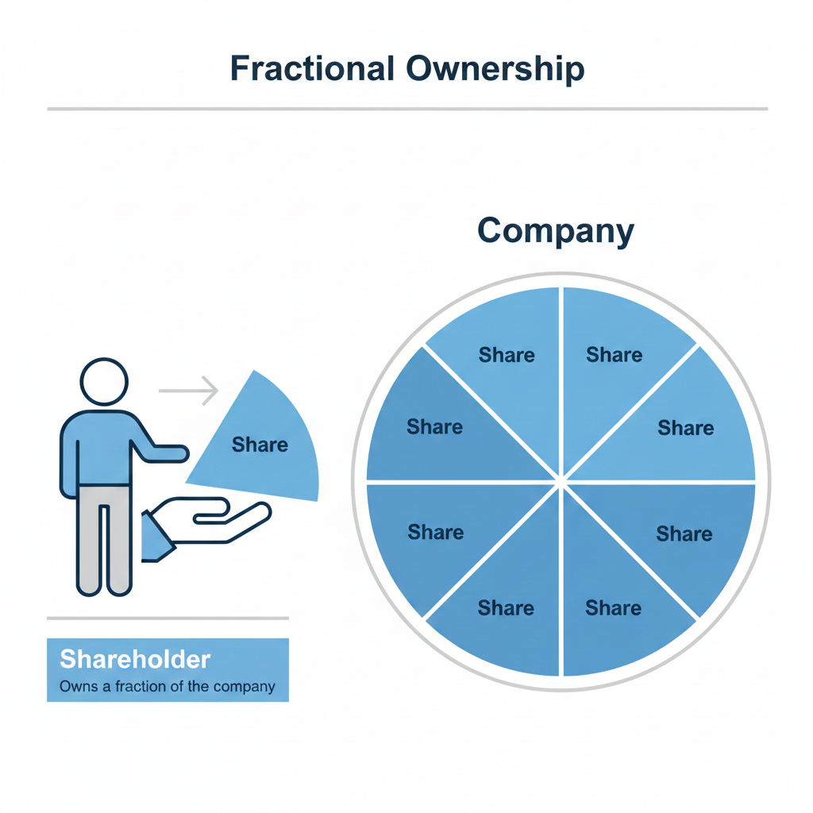
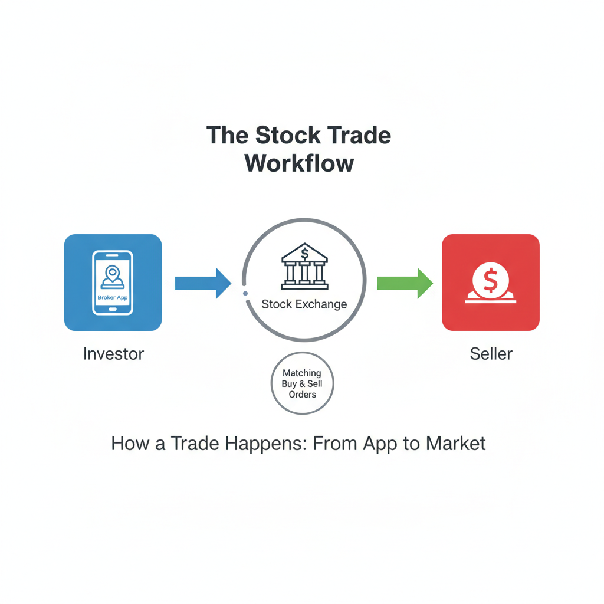
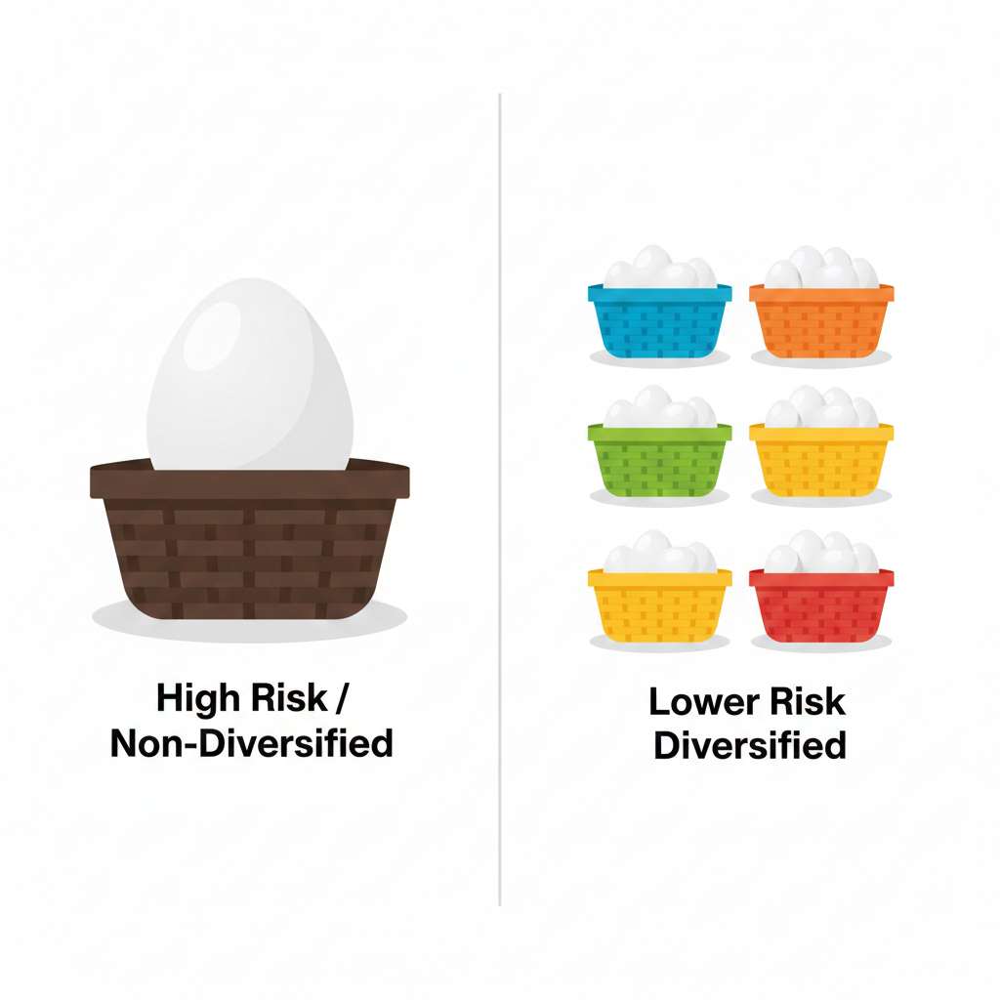

At its core, the stock market is a collection of exchanges where regular people and institutional investors can buy and sell shares of public corporations. It acts as a bridge between companies that need money to grow and investors who are looking for ways to put their savings to work. Understanding how this system operates is the first step toward financial literacy and building a long-term investment strategy.
For the beginner, the stock market can seem like a confusing web of numbers and acronyms. However, when stripped of the technical jargon, the market is simply a place where ownership is traded. By owning a stock, you own a piece of a business's future. This guide will walk you through the fundamental concepts, from the definition of a share to the mechanics of global exchanges.
Table of Contents
What is a Stock? Understanding Ownership
When you buy a "stock," you are buying a "share"—a literal piece of a company. If a company has 1,000 shares outstanding and you own 10 of them, you own 1% of that business. This ownership is often referred to as "equity." As a partial owner, you have a claim on a portion of the company’s assets and its future earnings.
Common vs. Preferred Stock
There are two primary types of stock: common and preferred. Most individual investors deal with common stock. This type typically grants you the right to vote on corporate policies and elect the board of directors. Preferred stock operates more like a hybrid between a stock and a bond; preferred shareholders usually do not have voting rights, but they have a higher claim on assets and earnings, meaning they get paid dividends before common shareholders do.
The Concept of Limited Liability
One of the most important aspects of owning stock is "limited liability." This means that as an investor, you are not personally responsible for the company's debts. If a company goes bankrupt, the most you can lose is the amount you invested. Your personal assets are protected from the company's creditors. This makes the stock market a much safer way to participate in business growth compared to being a general partner in a private firm.
This topic connects with Stock Market Basics.
Why Do Companies Issue Stock?
In the early stages, founders use personal savings or bank loans. However, to build global factories or conduct massive research, companies need capital that banks often cannot provide. This is when they decide to "go public."
The Initial Public Offering (IPO)
The process of a private company selling its first shares to the public is called an Initial Public Offering (IPO). By issuing stock, the company raises millions or billions of dollars without the obligation to pay it back like a loan. In exchange, the original owners give up a portion of their control to new public shareholders. This capital is then used to fuel growth, pay off debt, or acquire other companies.
Public Accountability and Transparency
Once a company is public, it is subject to strict regulations. In the United States, the Securities and Exchange Commission (SEC) requires these companies to release regular financial reports. This transparency ensures that investors have access to the same information as the professionals, creating a fairer playing field for the average person.
How the Stock Market Operates
The market is divided into the primary market (where stocks are created via IPO) and the secondary market (where investors trade shares with each other). Most everyday investing happens in the secondary market.
The Secondary Market and Price Discovery
When you buy shares of a tech giant today, you aren't buying them from the company; you are buying them from another investor. The company does not receive money from these daily trades. Instead, this market provides "liquidity," allowing investors to convert their shares back into cash whenever they choose. The price is determined by the constant tug-of-war between buyers and sellers, known as "price discovery."
Exchanges and Indices: Market Infrastructure
Stock exchanges are the platforms where trades happen. Major exchanges include the New York Stock Exchange (NYSE) and the Nasdaq. While the NYSE once had a physical trading floor for all stocks, most transactions today are handled by high-speed electronic networks.
Major Market Indices
To understand how "the market" is doing, we use indices. An index tracks a specific group of stocks to provide a snapshot of economic health. The S&P 500, for example, tracks 500 of the largest U.S. companies. The Dow Jones Industrial Average (DJIA) tracks 30 prominent leaders, while the Nasdaq Composite is heavily weighted toward technology firms. If these indices are "up," it generally means the majority of large companies saw their stock prices increase that day.
You may also want to read What Moves Stock Prices to understand daily fluctuations.
How Investors Earn Money
Investors typically seek two types of returns: capital appreciation and dividends.
Capital Appreciation
This is when you sell a stock for more than you paid for it. If you buy at $100 and sell at $150, that $50 is your capital gain. This is the primary goal for "growth" investors who focus on companies that reinvest their profits to expand rapidly.
Dividends and Passive Income
Dividends are cash payments a company makes to its shareholders from its profits. Established companies, like utilities or major consumer brands, often pay regular dividends. For many investors, dividends are a form of passive income that can be reinvested to buy even more shares, leading to a "compounding" effect over time.
Understanding Bull and Bear Markets
The market goes through cycles characterized by the "Bull" and the "Bear." A Bull market occurs when prices are rising or expected to rise, often fueled by economic optimism and high employment. Conversely, a Bear market is defined by a prolonged price decline, usually of 20% or more from recent highs, often accompanied by economic recession and investor fear.
The Role of Risk and Diversification
Investing involves the risk that you could lose money if a company fails or the market drops. While you cannot eliminate risk, you can manage it through diversification. This is the practice of spreading your money across different companies, industries, and asset classes.
Mutual Funds and ETFs
For most beginners, picking individual stocks is difficult. Mutual Funds and Exchange-Traded Funds (ETFs) solve this by allowing you to buy a "basket" of hundreds of stocks in a single transaction. This provides instant diversification; if one company in the basket fails, the others can help keep your portfolio stable. This approach is widely considered the most effective way for long-term investors to participate in market growth without the stress of monitoring individual companies daily.
This topic connects with Risk Management Fundamentals.
Key Takeaways
- A stock represents fractional ownership in a business.
- Companies issue stock to raise money for growth and provide liquidity to founders.
- The stock market is a secondary market where investors trade with each other.
- Indices like the S&P 500 help track the performance of the overall market.
- Returns come through capital gains (selling higher) and dividends (profit sharing).
- Diversification through funds is the primary way to manage investment risk.
Conclusion
The stock market is a powerful engine for wealth creation, but it requires a long-term perspective and a commitment to learning. By understanding the fundamentals—what a stock is, how exchanges function, and why companies go public—you move from being a spectator to an informed participant. While volatility is a natural part of the journey, staying disciplined and diversified often leads to more consistent results over time. Start small, stay curious, and let time work in your favor.
Educational Disclaimer:
This article is for educational and informational purposes only and should not be considered financial or investment advice. Investing involves risk.